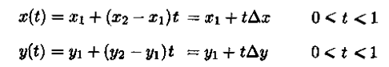
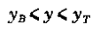
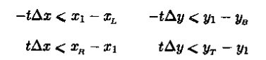
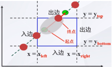

理解并掌握Liang-Barsky裁剪算法的交互式指南
Liang-Barsky裁剪算法 是一种高效的直线裁剪算法，用于确定一条直线在给定裁剪窗口内的可见部分。它通过计算直线的参数化表示与裁剪窗口边界的关系来实现裁剪。
在用户界面设计中，Liang-Barsky算法可以用来裁剪掉窗口或视图外的图形元素，确保用户只能看到他们应该看到的内容。
在CAD软件中，Liang-Barsky算法可以用来裁剪设计图纸上的线段，以便只显示设计者感兴趣的部分。
1.我们用方程表示直线，其中t就是直线的斜率，t∈[0,1]：
裁剪区域内部可以表达为两个不等式：
把直线方程代入得到不等式：
2.把直线看成是一条有方向的线段，把窗口的四条边及其延长线分成两类：入边和出边
入边：左边界和下边界------从裁剪框外向裁剪框内
出边：右边界和上边界------从裁剪框内向裁剪框外
3.分情况讨论
①d=0，q < 0, 说明直线与裁剪框平行，并且位于裁剪框的外面，直线为不可见，可抛弃，直接结束
q>=0，说明直线在它所平行的窗口边界的内部，还需进一步计算确定直线是否在窗口内、外、或者相交
②d < 0，说明直线是从裁剪边界的外部延伸到内部
③d>0, 说明直线是从裁剪边界的内部延伸到外部
对于d≠0，可以利用式子计算直线与边界k的交点的参数u。对于每条直线，可以计算直线位于裁剪窗口内线段的参数d1和d2
d1的值是由那些使得直线是从外部延伸到内部的窗口边界决定。对于这些边计算ri = qi/di.
d1 = max(ri,0)
d2的值是由那些使得直线是从内部延伸到窗口边界决定
d2 = min(ri,1)
如果d1>d2,这条直线完全在窗口的外面，不可见，可抛弃，否则，根据参数u的两个值，计算出裁剪后线段的端点